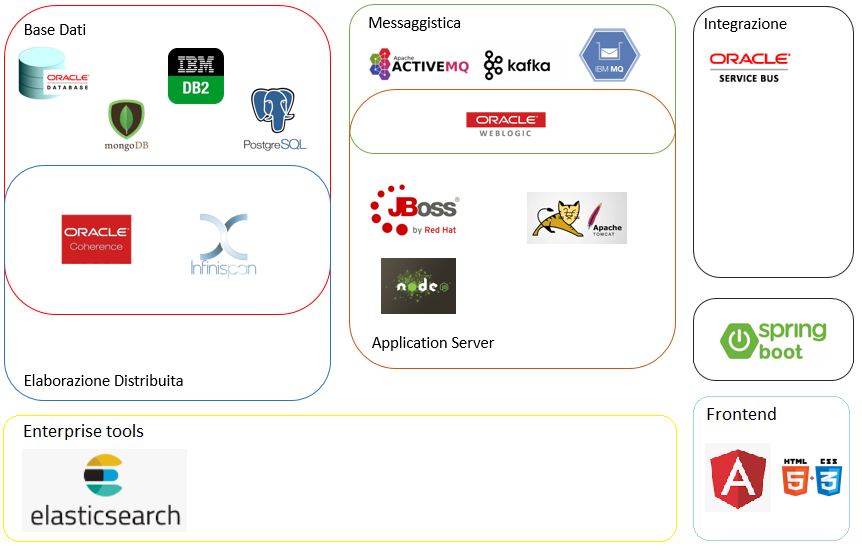

IT Notebook
The future belongs to those who believe in the beauty of their dreams.
The future belongs to those who believe in the beauty of their dreams.
Ribbon is a client side IPC library that is battle-tested in cloud. It provides the following features
Infografica che aggrega le diverse soluzioni tecnologiche adottate sui progetti svolti.

Libreria Java che permette di autogenerare report per l'analisi della qualità dei test unitari, evidenziando percentuale di coverage, numerosità dei branch, linee e metodi non testati.
Link utili:
MapStruct è un generatore di codice che semplifica l'implementazione di Mapper tra Java Beans, basato su un approccio a configurazione.
Link utili:
Libreria Java che permette di autogenerare codice standard nelle classi di modello: permette di autogenerare getter e setter, costruttori, metodi toString e hashCode, autogenerando anche funzionalità di Builder.
Link al progetto project lombok
Progetto esempio Sample Lombok
Elenco di tutti gli strumenti di analisi, monitoraggio e progettazione che a mio avviso non possono e non devono mancare per una sana gestione di un progetto informatico: